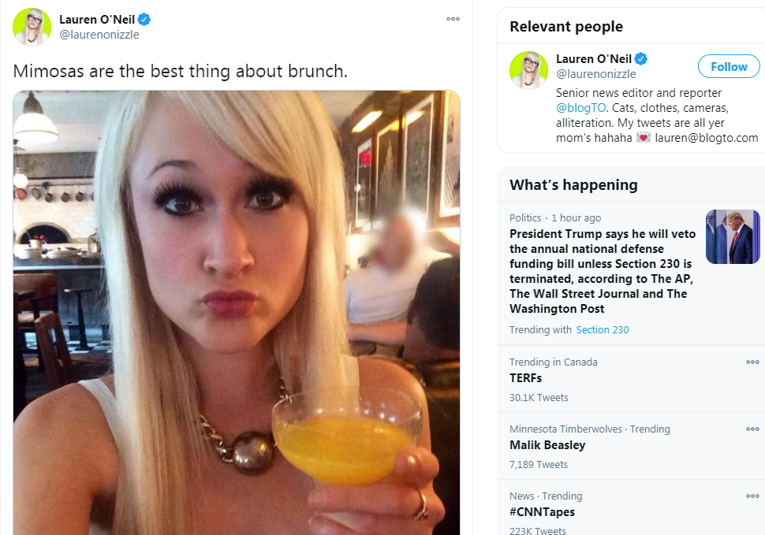
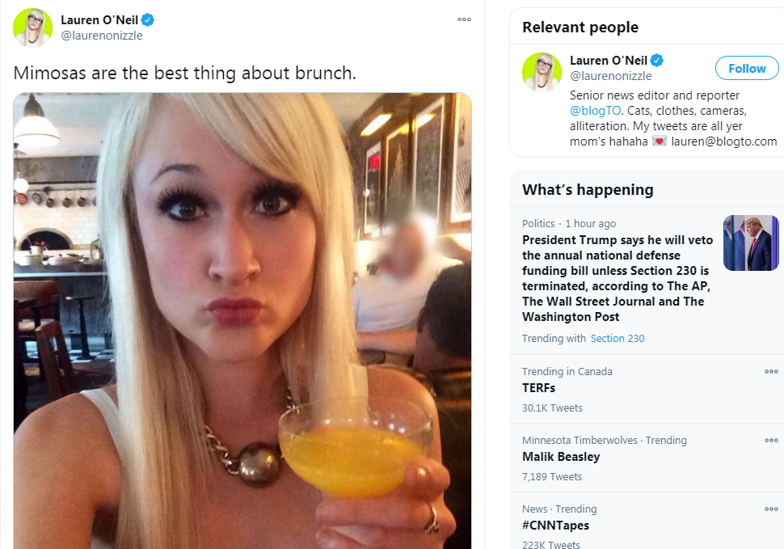
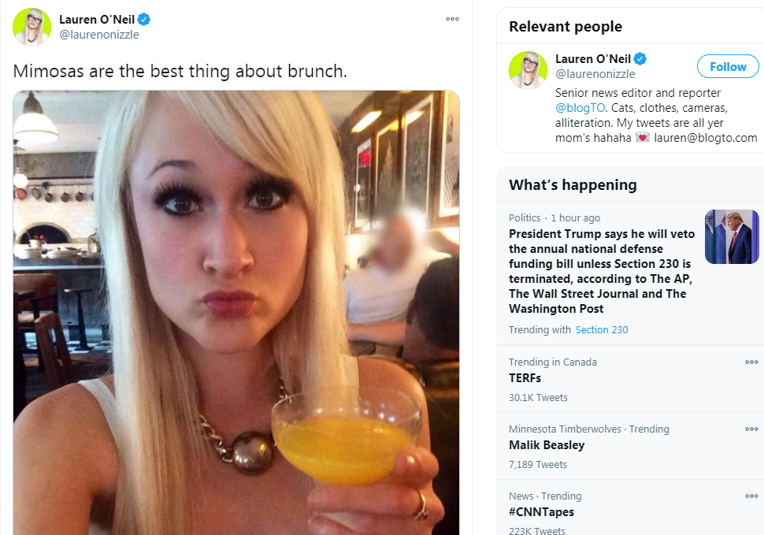

Adam Skelly of Adamson BBQ Arrested
December 1st, 2020
Well Adam Skelly, owner of Adamson BBQ, has been arrested. Catch up to this story here, where he vowed to defy the lockdown, and here, where the police changed the locks on his business.
BlogTO:
TDC_ARTICLE_START
The sauce has hit the fan at Toronto's Adamson Barbecue restaurant, where, after opening for a third day in defiance of multiple lockdown orders, owner Adam Skelly was just taken away in handcuffs by police.
"A 33-year-old man was arrested for Attempting to Obstruct Police," reads an update issued by TPS Operatins shortly after 1 p.m. on Thursday.
"He has been taken into custody. More details will follow. Officers remain in the area. We continue to ask for calm."
TDC_ARTICLE_STOP
I bet the catlady who wrote this article was incredibly pleased with herself when writing this, for multiple reasons. "The sauce has hit the fan," is exactly the thing that some midwit childless cunt writes, then reclines back in her chair, thrilled at her towering intellect.
TDC_ARTICLE_START
It is unclear if any other new charges have been laid against Skelly today (in addition to nine announced yesterday against him and his incorporated restaurant chain), but the anti-maskers who've been supporting him are straight up freaking out right now.
Livestreamed video posts from the scene of Skelly's restaurant at Queen Elizabeth and Royal York Roads show police, some of them on horseback, surrounding the building in a united front.
Hundreds of histrionic protesters have positioned themselves in front of the cops and are screaming things like "FREEDOM!," "SHAME!" and "STAND DOWN OFFICERS! STAND DOWN!
TDC_ARTICLE_STOP
Adam Skelly being arrested
Get a load of the judgemental language used by whomever wrote this piece. Actually, I'm a little too pissed off, let me look this up. Okay, turns out it's someone named Lauren O'Neil, and oh my god is it ever exactly what you are expecting it to be.

Lauren O'Neil
So let's look a little deeper. What's going on with Lauren O'Neil? Well, according to her Muckrack Bio:
TDC_ARTICLE_START
Lauren O’Neil is best known as the host of CBC News Live Online, Canada's first and only national webcam-based current affairs call-in show.
As a member of the CBC's Community and Social Media team, Lauren has her finger glued to the pulse of the web and thrives on knowing what's buzzing at any given moment.
Her innate ability to find and disseminate interesting the conversation at large has earned Lauren a respectable following both online and off.
TDC_ARTICLE_STOP
 Imagine bragging about having a call-in show where your production values are so far in the toilet that you're literally using a webcam. And her twitter page routinely gets about 5-10 likes per tweet. Quite the respectable following she's got there. Also, just the general language used, yes this is everything wrong with the world.
As for Lauren herself.

Imagine bragging about having a call-in show where your production values are so far in the toilet that you're literally using a webcam. And her twitter page routinely gets about 5-10 likes per tweet. Quite the respectable following she's got there. Also, just the general language used, yes this is everything wrong with the world.
As for Lauren herself.
Please read the twitter bio.
That tweet got 5 likes. This is a serious girl.
TDC_ARTICLE_START
Police first arrived to the Texas-style BBQ joint early Thursday morning to change the establishment's locks after Skelly vowed that he would once again reopen his restaurant for indoor dining after being ordered to close by Toronto Public Health.
Flanked by crowds of people wearing Trump 2020 hats and carrying anti-lockdown signs, the infuriated restaurant owner eventually managed to gain access to the building and start serving meat.
Police stayed on scene in an attempt to control the crowd of protesters, who have collectively come to be known in recent days as "BBQAnon."
TDC_ARTICLE_STOP
The lovely Lauren again.
Alrighty, just because Lauren O'Neil is a top 1% shittiest Canadian, doesn't mean that everything about this scene is perfect. BBQAnon had better be a joke, and not literally the new hustle from QTards. I'm pretty sure it's ironic, but I'm hedging my bets.
And while Trump himself is a Zionist Conman, Trump supporters are a moderately good indication of our goys.
More importantly, the police are the Blue Antifa, and you should treat them as such.
TDC_ARTICLE_START
Skelly was arrested and taken away for police obstruction shortly before 12:30 p.m. this afternoon.
His supporters remain camped out around the Etobicoke location of Adamson Barbecue, however, where they are now starting to tussle with police.
At least one additional male has been arrested so far for assaulting a police officer.
BBQAnon clashing with police
Meanwhile, four days after Toronto and Peel were put into the "grey zone" of Ontario's COVID-19 restriction framework, a massive anti-lockdown protest has broken out at Queen's Park.
The hashtag #IStandWithAdam is trending on Twitter in the U.S. and people on both sides of the debate are growing increasingly distressed over how the situation is being handled.
Skelly is expected to appear in court on March 19 of 2021 to face multiple charges for hosting illegal gatherings, breaching indoor dining regulations and operating without a business license on both Tuesday and Wednesday.
"Top to bottom, this thing stinks — it reeks of corruption," said Skelly of the lockdown in an Instagram post announcing his plans to reopen earlier this week. "How many businesses — how many people — are going to lose everything? Enough is enough."
"We're opening for anybody who is a fan of freedom and sovereignty," said Skelly at the time. "The right to choose what you wear, where to go, who to have over at your house, what businesses you can go to."
TDC_ARTICLE_STOP
As I said in the previous article, I can't comment to how his trial is going to go. I also can't really say for sure whether them throwing 9 charges at him is them trying to make something stick, while letting him off on other things as a way to legitimize his show trial. It could well be standard procedure, I don't really know.
I'll just keep you posted.
Imagine bragging about having a call-in show where your production values are so far in the toilet that you're literally using a webcam. And her twitter page routinely gets about 5-10 likes per tweet. Quite the respectable following she's got there. Also, just the general language used, yes this is everything wrong with the world.
As for Lauren herself.
